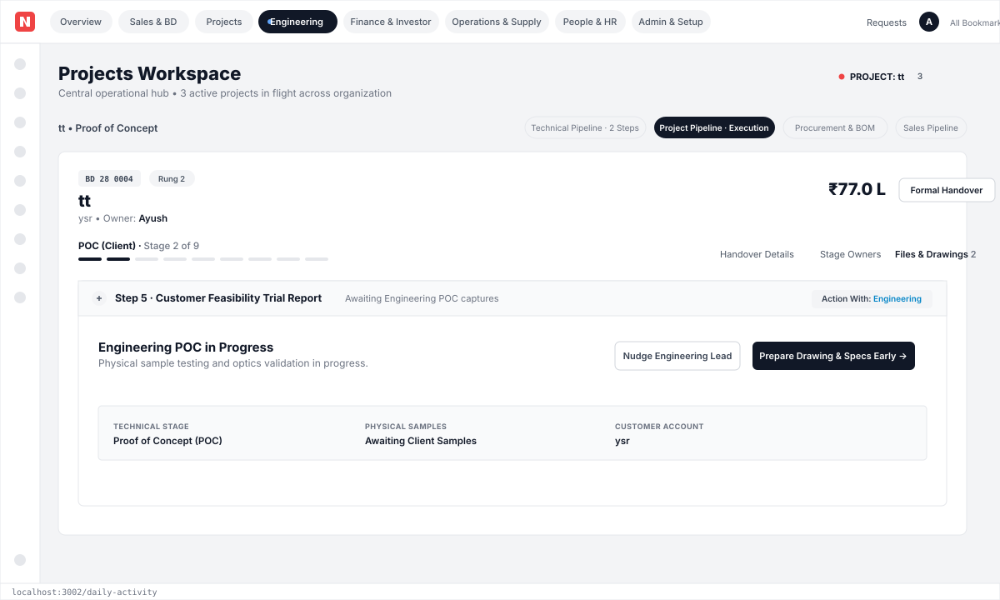
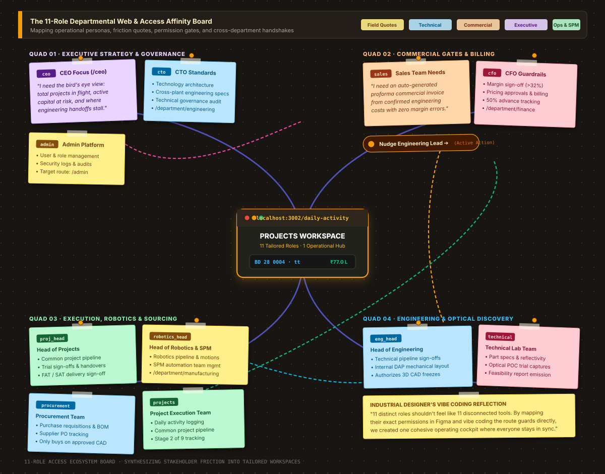
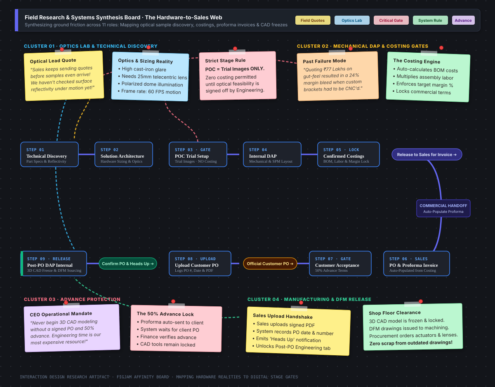
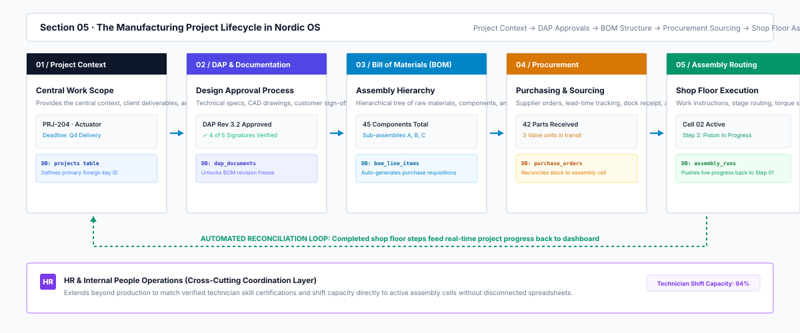
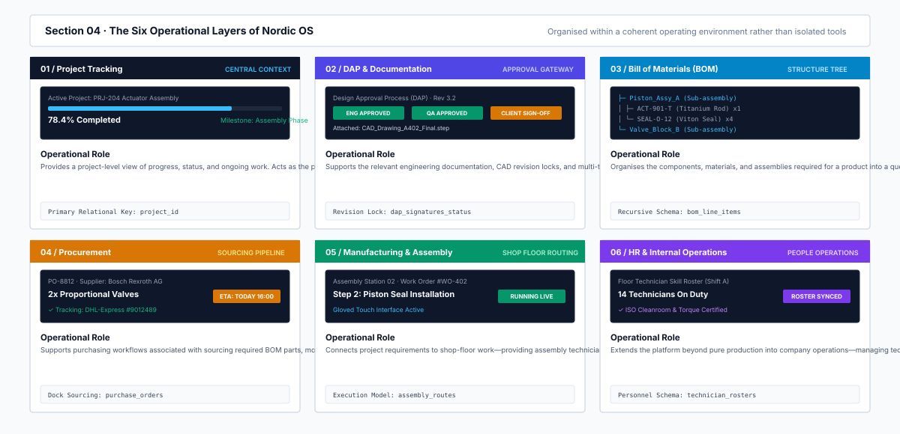
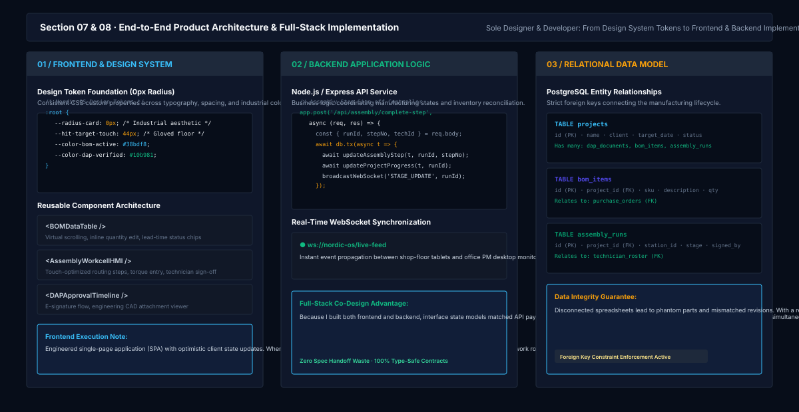
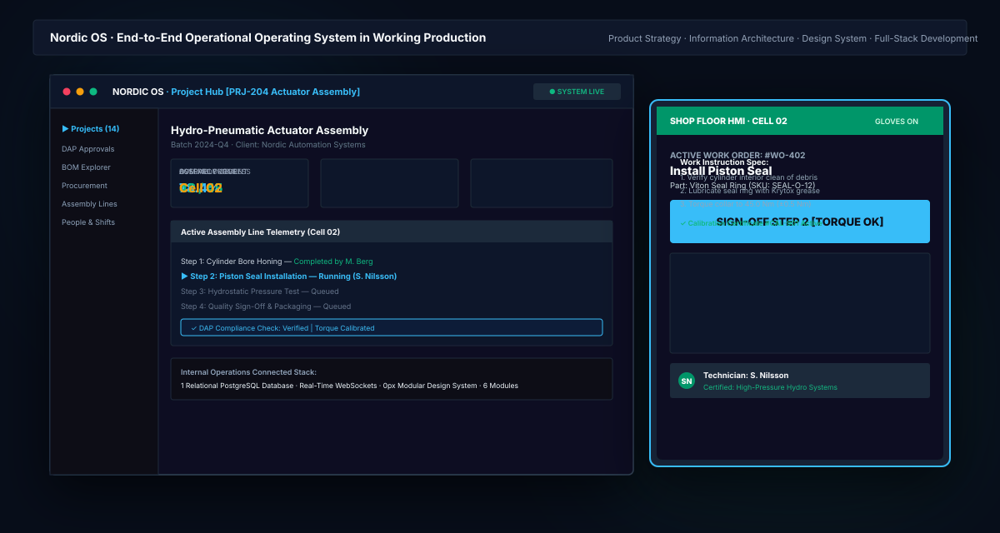

Nordic OS — Machine Vision & Hardware Operations Workspace
Designing and building an internal operating system for high-precision machine vision—unifying optical lab testing, 9-stage engineering handoffs, 11-role access control, and working web prototypes to eliminate costly hardware rework.

localhost:3002) & shop-floor handoffs
From Physical Hardware Reality to Working Operations Software
- 9-Stage Deterministic Pipeline: Mapped every physical and commercial milestone—from part reflectivity testing and camera sizing to internal DAP, confirmed costings, and signed PO uploads.
- 11-Role Access Architecture (RBAC): Architected distinct operational views and stage permissions across Executive (Admin, CEO, CTO), Commercial (Sales, CFO), Engineering (Head of Eng, Technical), and Execution (Projects, Robotics, Procurement).
- Hands-On Vibe Coding (localhost:3002): Bridged Figma to working code, rapidly authoring reactive project cards, stage steppers (
Stage 2 of 9), bottleneck prompts, and 1-click inter-departmental nudges alongside 1 backend engineer.
100% Optical Sign-Off Before Quotes & Zero Wasted CAD Hours
- Zero Premature Quotations: Enforced hard stage locks—Step 5 commercial costings remain strictly locked until Step 3 optical POC trial images verify camera resolution and lighting angles.
- 100% Protected Engineering Hours: Detailed 3D CAD freezes and DFM tooling only unlock after Sales logs the signed customer PO and confirmed 50% advance.
- Unified Operational Rhythm: Replaced private spreadsheets and blind WhatsApp chats with a single living cockpit used daily by 11 departmental roles across our organization.
In high-precision machine vision and industrial automation, projects are grounded in unforgiving physics. A customer sends physical sample parts with irregular reflectivity, curved surfaces, or challenging surface finishes. Before anyone can promise a price or cycle time, an optical engineer has to test camera sensors, lenses, and lighting angles in the lab.
Yet in day-to-day operations, teams were constantly working out of sync. Sales would draft commercial quotations before optical feasibility was verified. Engineering would spend weeks detailing 3D CAD models before the customer confirmed advance payment terms. And Procurement sat waiting on bills of materials while physical samples sat untracked in incoming mail bins.
Nordic OS was created to replace scattered WhatsApp messages, private Excel cost sheets, and untracked PDFs with an intuitive internal operating cockpit. As an Industrial Interaction Designer who learned modern software development and vibe coding, I designed the platform to bridge hardware physics, commercial handoffs, and team permissions into one clear visual workflow.
Reflective chrome, curved glass, or dark rubber require custom camera, lens, and lighting lab trials before costs or cycle times can be promised.
Sales, Engineering, and Procurement operated in silos—relying on private spreadsheets, WhatsApp chats, and untracked sample receipts.
Build a living internal operating cockpit that enforces physical verification, protects billable engineering time, and gives 11 roles instant clarity.
An internal operations system only succeeds if every team member sees exactly what they need to do their job without visual noise or unauthorized edit privileges. On a dedicated affinity board, I clustered the 11 key operational roles—synthesizing their direct friction quotes, target routes, and cross-department handshakes around the central Projects Workspace hub.

CEO, CTO & Admin
admin: Platform config, user & role management, and security logs (/admin).
ceo: Company-wide executive dashboard, strategic KPIs, and oversight (/ceo).
cto: Engineering standards, technology architecture, and technical governance.
Sales Team & CFO
cfo: Financial ops, project margins, pricing approvals, and billing (/department/finance).
sales: Sales pipeline, commercial inquiries, and auto-populated proforma generation (/department/business-development).
Head of Eng & Tech Team
eng_head: Technical pipeline, project execution oversight, team management, and design sign-offs.
technical: Optical part specs discovery, trial image captures, and POC feasibility reports.
Projects, Robotics & BOM
proj_head: Common project pipeline, trial sign-offs, and FAT/SAT delivery.
robotics_head: Special Purpose Machinery (SPM) and automation pipelines.
procurement: Component BOM requisitions and supplier PO tracking.
In custom industrial automation, hardware mistakes are expensive. Sizing the wrong camera lens or machining a mechanical frame without verified sample parts can cost hundreds of thousands of rupees in rework. Before Nordic OS, three critical bottlenecks created recurring friction:
Quoting Before Optical Validation
Sales teams were eager to send commercial quotations, but without a confirmed Proof of Concept (POC) validating camera resolution and lighting angles, quotes routinely missed crucial hardware costs.
Premature 3D CAD Detailing
Engineering would invest 40+ hours modeling detailed 3D CAD assemblies and Design for Manufacturing (DFM) layouts before the customer had formally signed the PO or paid the 50% advance.
Siloed Handoffs & Untracked Parts
Sales, Engineering, and Procurement communicated through disjointed spreadsheets and emails. When physical samples arrived at the lab, nobody outside the receiving dock knew they were ready for trial.
Sales cannot issue a proforma invoice until engineering signs off on optical feasibility, and engineering cannot freeze 3D CAD until the customer signs the PO and confirms the advance.
In Nordic OS, progress advances only when the responsible department completes their verified step. This eliminates the classic hardware dilemma: Engineering can focus on optical sample testing without premature commercial pressure, while Sales gets automatically populated proformas with guaranteed margins the moment technical feasibility is confirmed.

Optical Testing & POC (No Costing)
Technical discovery catalogs part specs and surface reflectivity. Hardware sizing establishes camera resolution and optics. POC captures trial images under motion—with commercial costing strictly locked until optics pass.
Internal DAP & Confirmed Costing
Engineering completes the mechanical layout and system architecture. The costing engine compiles the Bill of Materials (BOM), labor hours, profit margin, and commercial terms into a verified quote approved for Sales release.
Proforma Invoice & 50% Advance
Sales auto-populates the proforma commercial invoice directly from confirmed costings. The quote is issued to the client under standard 50% advance terms, awaiting customer review and sign-off.
Signed PO & Post-PO 3D CAD Freeze
Sales uploads the signed official customer PO (logging PO #, date, and signed PDF). Only then is Post-PO DAP unlocked for detailed 3D CAD freeze, Design for Manufacturing (DFM), and component procurement.

The daily operational touchpoint of Nordic OS is the Projects Workspace (hosted locally at localhost:3002/daily-activity). Rather than hiding vital project metrics behind nested tables, the interface surfaces active projects as rich operational cards:
Project Status Cards
Cards like BD 28 0004 · Rung 2 · tt (Valued at ₹77.0 L) display stage ownership, account leads, and an expandable 9-segment progress bar showing POC (Client) · Stage 2 of 9.
Contextual Bottleneck Prompts
When a step is blocked, Nordic OS clearly displays the bottleneck: Step 5 · Customer Feasibility Trial Report · Awaiting Engineering POC captures · Action With: Engineering with tactile action buttons.
1-Click Operational Nudges
Instead of sending detached emails, sales leads can click Nudge Engineering Lead or Prepare Drawing & Specs Early → to unblock tasks directly within the workspace.

Rather than stopping at static design mockups, I embraced vibe coding to rapidly bring the Projects Workspace into a live, interactive web application. By writing the frontend code directly, I could test real state handoffs and refine user interactions in real time:
Reactive Frontend Logic
Built reactive project cards, stage steppers (Stage 2 of 9), and pipeline tab switchers (Technical Pipeline, Project Pipeline Execution, Procurement & BOM, Sales Pipeline) that respond instantly to user clicks.
Pairing with 1 Developer
I worked closely with our single backend engineer, who wired up the API endpoints and authentication handlers while I focused on the interface logic, component states, and workflow design.
Live CEO Walkthroughs
Rather than presenting theoretical slides, we reviewed live builds running at localhost:3002 directly with our CEO, refining permission gates and commercial advance thresholds based on actual operational needs.

Nordic OS successfully transformed how our team collaborates across hardware automation projects. By replacing disjointed tools with an internally deployed, working workspace, the platform delivered measurable improvements:

100% of commercial quotations are backed by verified camera, lens, and lighting POC trials. Zero missed hardware costs.
Engineering only invests billable 3D CAD detailing once Sales has logged the signed customer PO and confirmed 50% advance.
Any team member, engineer, or executive can locate project state, bottleneck ownership, and next handoff in seconds.
What Building Industrial Tools Teaches an Interaction Designer
Physical Reality Dictates UI
Software for hardware operations cannot be designed in an abstract vacuum. Surface reflectivity, camera focal lengths, and physical sample deliveries dictate the exact sequence of digital screens.
Role Clarity Over Feature Bloat
More features don't make better enterprise software. Tailoring clean, focused views for 11 distinct personas ensures everyone moves fast without drowning in another department's data.
Vibe Coding is a Design Superpower
Being able to turn Figma layouts into running code (localhost:3002) eliminates misinterpretation. It allows designers to test real interactions, refine button feedback, and align with leadership in hours instead of weeks.
Nordic OS — Machine Vision & Hardware Operations Workspace
Industrial Interaction Design · Hardware Stage Gates · 11-Role RBAC · Prototyping & Working Web Prototype
Explore other case studies
Nordic ONE
Industrial software platform unifying Vision (Flagship), MES, ERP & EQMS.
View case study →Nordic Visitor
Multi-role software unifying employee host invites, visitor mobile pre-check-in, and security guard gate clearance.
View case study →AERA
Modular architectural air purification system for modern commercial environments.
View case study →GLIDE
Transformable electric micro-mobility vehicle and pop-up retail system.
View case study →